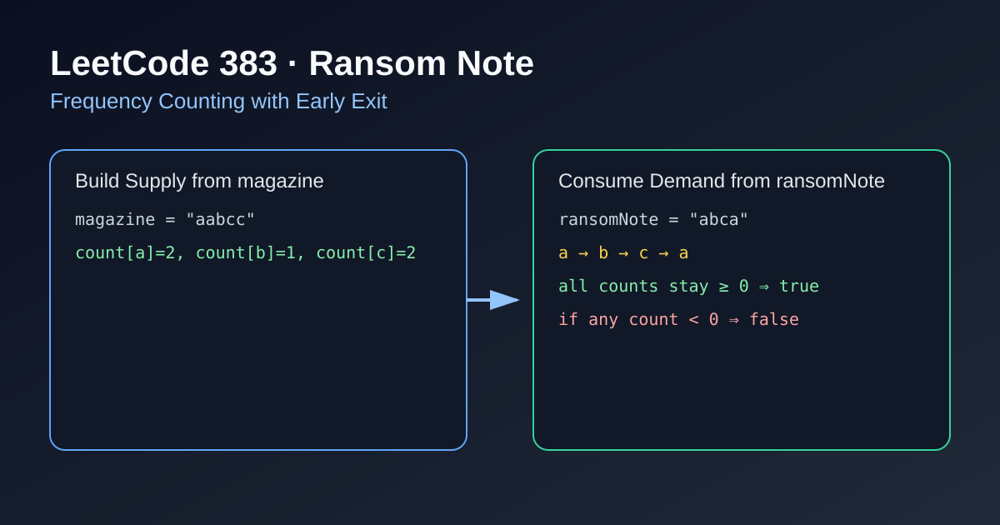

LeetCode 383: Ransom Note (Frequency Counting with Early Exit)
LeetCode 383Hash TableStringInterviewToday we solve LeetCode 383 - Ransom Note.
Source: https://leetcode.com/problems/ransom-note/

English
Problem Summary
Given strings ransomNote and magazine, return true if you can construct ransomNote by using letters from magazine. Each letter in magazine can be used at most once.
Key Insight
This is a pure counting constraint: for every character c, we must have count_magazine[c] >= count_ransom[c]. Build supply first, then consume demand.
Brute Force and Limitations
A naive approach repeatedly scans magazine for each ransom character and marks used positions, which can degrade to O(nm). Counting gives linear time.
Optimal Algorithm Steps
1) Count every character in magazine.
2) Iterate ransomNote, decrement corresponding count.
3) If any count becomes negative, return false immediately.
4) Finish loop and return true.
Complexity Analysis
Time: O(m + n) where m and n are lengths of magazine and ransomNote.
Space: O(1) for fixed lowercase alphabet (or O(k) for general charset).
Common Pitfalls
- Forgetting early exit when count drops below zero.
- Using expensive string replace operations repeatedly.
- Not clarifying alphabet assumption (lowercase English letters in this problem).
Reference Implementations (Java / Go / C++ / Python / JavaScript)
class Solution {
public boolean canConstruct(String ransomNote, String magazine) {
int[] cnt = new int[26];
for (char c : magazine.toCharArray()) cnt[c - 'a']++;
for (char c : ransomNote.toCharArray()) {
if (--cnt[c - 'a'] < 0) return false;
}
return true;
}
}func canConstruct(ransomNote string, magazine string) bool {
cnt := [26]int{}
for _, c := range magazine {
cnt[c-'a']++
}
for _, c := range ransomNote {
cnt[c-'a']--
if cnt[c-'a'] < 0 {
return false
}
}
return true
}class Solution {
public:
bool canConstruct(string ransomNote, string magazine) {
int cnt[26] = {0};
for (char c : magazine) cnt[c - 'a']++;
for (char c : ransomNote) {
if (--cnt[c - 'a'] < 0) return false;
}
return true;
}
};class Solution:
def canConstruct(self, ransomNote: str, magazine: str) -> bool:
cnt = [0] * 26
for c in magazine:
cnt[ord(c) - ord('a')] += 1
for c in ransomNote:
idx = ord(c) - ord('a')
cnt[idx] -= 1
if cnt[idx] < 0:
return False
return Truevar canConstruct = function(ransomNote, magazine) {
const cnt = new Array(26).fill(0);
for (const c of magazine) cnt[c.charCodeAt(0) - 97]++;
for (const c of ransomNote) {
const i = c.charCodeAt(0) - 97;
cnt[i]--;
if (cnt[i] < 0) return false;
}
return true;
};中文
题目概述
给定字符串 ransomNote 和 magazine，判断是否可以用 magazine 中的字符拼出 ransomNote。每个字符最多使用一次。
核心思路
本质是字符频次约束：对任意字符 c，都要满足 magazine 的数量不少于 ransomNote 的需求。先统计供给，再逐个消耗需求。
暴力解法与不足
暴力法会为每个需求字符在 magazine 里反复查找并标记，最坏接近 O(nm)。计数法可以线性完成。
最优算法步骤
1）遍历 magazine，统计每个字符出现次数。
2）遍历 ransomNote，对应计数减一。
3）若某次减完小于 0，立即返回 false。
4）全部处理完仍合法，返回 true。
复杂度分析
时间复杂度：O(m + n)。
空间复杂度：小写字母场景下为 O(1)。
常见陷阱
- 计数小于 0 后没有及时返回，造成无谓计算。
- 用字符串替换模拟“删除字符”，复杂度偏高。
- 没写清楚题目字符集假设（本题为小写英文字母）。
多语言参考实现（Java / Go / C++ / Python / JavaScript）
class Solution {
public boolean canConstruct(String ransomNote, String magazine) {
int[] cnt = new int[26];
for (char c : magazine.toCharArray()) cnt[c - 'a']++;
for (char c : ransomNote.toCharArray()) {
if (--cnt[c - 'a'] < 0) return false;
}
return true;
}
}func canConstruct(ransomNote string, magazine string) bool {
cnt := [26]int{}
for _, c := range magazine {
cnt[c-'a']++
}
for _, c := range ransomNote {
cnt[c-'a']--
if cnt[c-'a'] < 0 {
return false
}
}
return true
}class Solution {
public:
bool canConstruct(string ransomNote, string magazine) {
int cnt[26] = {0};
for (char c : magazine) cnt[c - 'a']++;
for (char c : ransomNote) {
if (--cnt[c - 'a'] < 0) return false;
}
return true;
}
};class Solution:
def canConstruct(self, ransomNote: str, magazine: str) -> bool:
cnt = [0] * 26
for c in magazine:
cnt[ord(c) - ord('a')] += 1
for c in ransomNote:
idx = ord(c) - ord('a')
cnt[idx] -= 1
if cnt[idx] < 0:
return False
return Truevar canConstruct = function(ransomNote, magazine) {
const cnt = new Array(26).fill(0);
for (const c of magazine) cnt[c.charCodeAt(0) - 97]++;
for (const c of ransomNote) {
const i = c.charCodeAt(0) - 97;
cnt[i]--;
if (cnt[i] < 0) return false;
}
return true;
};
Comments